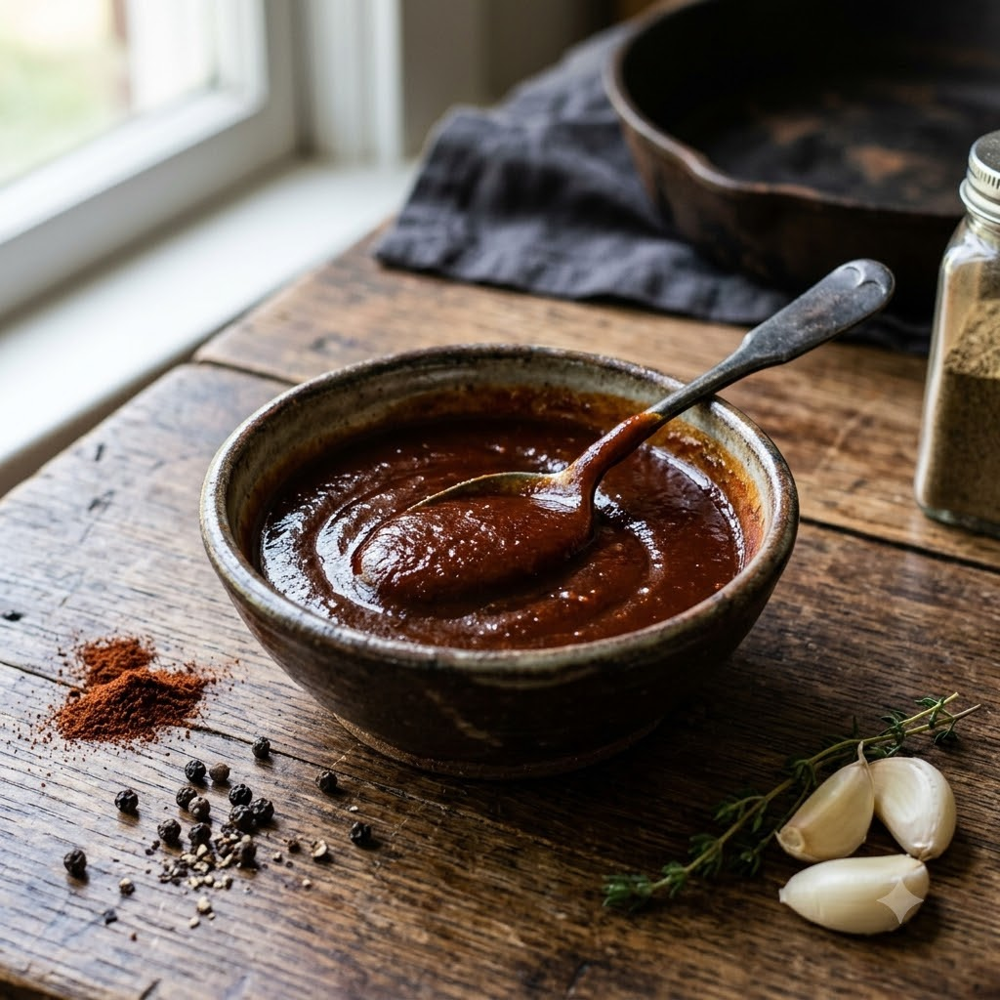

BBQ Sauce

BBQ Sauce
Chef Magic – Sauté 12 min — Makes ~1.5 cups
Vegetarian • Homemade
Ingredients
- 1 cup tomato ketchup
- 2 tbsp brown sugar or jaggery (gud)
- 2 tbsp vinegar
- 1 tbsp Worcestershire sauce (optional)
- 1 tsp smoked paprika
- 1/2 tsp garlic powder
- 1/2 tsp onion powder
- 1/4 tsp black pepper (kali mirch)
- Salt to taste
Method
1Add all the ingredients to the jar; select Sauté (Speed 1–2, ~100–110°C) and stir to combine.
2Simmer, stirring occasionally, for 8–10 minutes until slightly thickened and glossy.
3Cool completely before bottling; refrigerate for up to 3 weeks.
Tip: Brush this on chicken or paneer skewers in the last 3–4 minutes of air-frying for a sticky, caramelised glaze without burning the sugars.